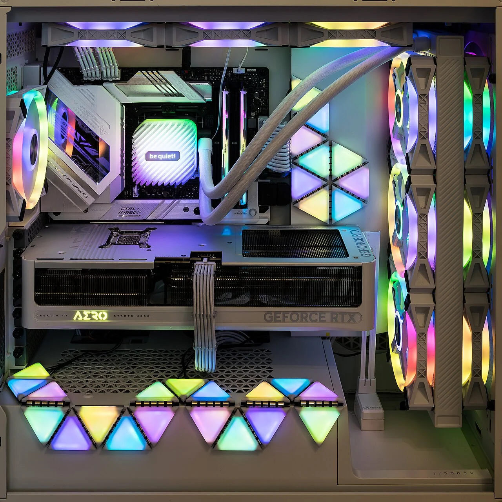

Справочник по устройству ПККомпьютер
Компьютер
изнутри
Разберитесь, за что отвечает каждая деталь, и проверьте, подойдут ли друг другу компоненты вашей сборки.
Изучить комплектующие →
Разберитесь, за что отвечает каждая деталь, и проверьте, подойдут ли друг другу компоненты вашей сборки.
Изучить комплектующие →